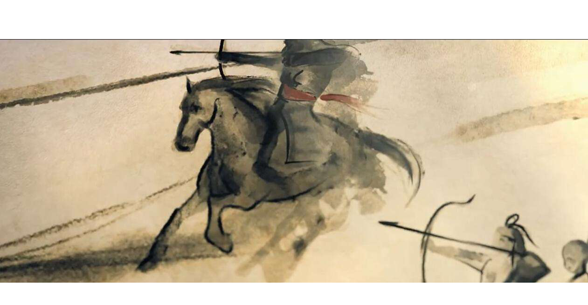

The Silk Road is not a peaceful trade, and a rich history of religious and harmonious cultural exchange
for several reasons. First of all, there were diseases infect between countries. For example, the
smallpox is an effective diseases during the Silk Road. It killed around 150,000,000 people. Also,
there was many wars that happened during the Silk Road. For example, Genghis Khan is a person who is
very good at fighting with other countries. He fought from Mongolia all the way to the Mediterranean
Sea. Many innocent people died, and many countries was affected.

Status: Negative Opinions